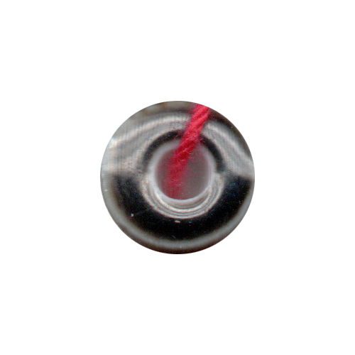

<!DOCTYPE html>
<html lang="kr"></html>
<head>
  <meta charset="UTF-8">
  <meta http-equiv="X-UA-compitable" content="IE-edge">
  <meta name="viewport" content="width=device-width", initial-scale="1.0">
  <title>k</title>
  <link href="k.css" rel="stylesheet">
  <script type="text/javascript">
    document.oncontextmenu = function(){return false;}
    function redirectToRandomPage() { 
            // Array of specific pages on the website 
            const pages = [ 
                'index2.html', 
                'index9.html', 
                'index16.html', 
                'index23.html' 
            ]; 
            // Generate a random index 
            const randomIndex = Math.floor(Math.random() * pages.length); 
            // Redirect to the randomly selected page 
            window.location.href = pages[randomIndex]; 
    }
  </script>
</head>
<body oncontextmenu="return false" onselectstart="return false" ondragstart="return false" onkeydown="return false">
  <div class="box-container">
      <div class="box-item1">
        <div class="map">
          <a onclick="redirectToRandomPage()">
            
          </a>
          <p>사이보그적 존재들의<br>실뜨기 놀이</p>
          <div class="comment">
            <p>해러웨이의 이론에서 실뜨기는 핵심적인 비유이다. 실뜨기 놀이는 패턴을 변형하며 아름다운 무늬를 만들고, 그것을 다른 이에게 전해준다. 이 과정에서 우리는 서로가 서로를 구성하게 된다. 이것은 해러웨이가 우리에게 제안하는 공생의 방법이다.</p>
          </div>
      </div>
    </div>
    <div class="box-item2">
      <div class="contents">
        I.  해러웨이의 실뜨기
        <br><br>해러웨이는 실뜨기 놀이의 비유를 통해 우리가 존재하는방식을 제안한다. 실뜨기 놀이가 가지는 첫 번째 의미는 ‘전복(顚覆)’에 있다. 픽션과 팩트의 경계에 대한 해러웨이의 질문들과 함께 실뜨기가 가지는 전복의 비유를 이해할수 있다. 해러웨이는 견고해 보이는 팩트와 완전히 허구의 것처럼 보이는 픽션이 사실은 그렇게 다르지 않은 것이라고 말한다. 팩트와 픽션의 차이는 시제뿐이다. 팩트는 되어진 것, 픽션은 되고 있는 것이다. 만들어진 팩트를 어떻게 픽션의 영역으로 편입시킬 수 있을까?  어떻게 기존의 것을 공략하여 새로운 실뜨기 패턴을 만들 수 있을까? 즉, 우리는 기존의 실을 풀어 어떤 이야기를 만들어낼 수 있을까?
        <br><br>실뜨기 놀이가 가진 두 번째 의미는 ‘서로의 몸 구성하기’다.  실뜨기는 여타의 게임들과 달리 하나의 절대적 패턴을이용해 상대를 이기는 것이 아니라 패턴을 변형하여 아름다운 무늬를 만들고, 다른 이에게 전해준다는 것에 있다. 이 과정에서 우리는 서로가 서로를 구성하는 경험을 하게된다.  이것은 해러웨이가 우리에게 제안하는 공생의 방법이다. 
        <br><br><br><br><br>
        II.  사이보그적 존재들의 실뜨기 놀이: 매뉴얼
        <br><br>준비물:  일곱 뼘 이상의 넉넉한 길이의 뜨개실, 원하는 모양과 양의 구슬 또는 비즈
        <br><br>1.  실에 원하는 만큼 구슬을 끼운다. 각각의 구슬은 좌표다.
        <br><br>2.  [첫 번째 패턴] 양손바닥을 세우고 실을 엄지에 걸치도록 건 뒤 나머지 네 손가락에 한 번씩 더 감는다. 오른손 중지로 왼손에 걸린 실을 들어 끼운다. 왼손 중지도 마찬가지로 오른손의 실을 걸어 첫 번째 패턴을 완성한다.
        <br><br>
        
        <br><br>3.  놀이에 참여하는 다음 사람이 첫 번째 패턴을 완성한 사람으로부터 실을 가져가 두 번째 패턴을 만든다. [두 번째 패턴] 첫 번째 패턴을 만든 사람의 두 손이 놓인 방향과 수직방향으로 양손을 위치시킨다. 양쪽에 대칭으로 꼬인 x자의 실을 양 검지와 엄지로 쥐고, 아래로 내린 다음 다시 손가락을 위로 올려 실을 통과한다. 양손을 넓게 벌려 실을 팽팽하게 하면 두 번째 패턴이 완성된다. 첫 번째 패턴에서 구슬들이 가지고 있던 위치는 이제 무작위하게 변화했다. 
        <br><br>
        
        <br><br>4.  놀이에 참여하는 다음 사람에게 실을 넘겨주어 세 번째 패턴을 완성할 수 있도록 한다. 여기서 핵심은 놀이의 참여자를 최대한 다양히하는 것이다. [세 번째 패턴] 두 번째 패턴 때처럼 패턴에 수직이 되는 방향으로 손을 위치시키고 양쪽에 대칭으로 꼬인 x자의 실을 양 검지와 엄지로 쥔다. 이번에는 실을 올렸다가 넓게 벌려 아래로 내린 다음 다시 위로 올린다. 실을 팽팽하게 당겨 세 번째 패턴을 완성한다. 구슬들의 위치는 또 다시 바뀌었다. 
        <br><br>
        
        <br><br>5.  [네 번째 패턴] 양손 엄지와 새끼손가락만 남기고 모든 손가락을 접는다. 오른손 새끼손가락을 들어 평행하도록 놓인 두 개의 실 중 왼쪽의 것을 들어 당기고, 왼손도 마찬가지로 오른쪽의 것을 당겨 교차시킨다. 두 손을 아래로 내리고 실을 건 새끼손가락에서 실이 빠져나가지 않도록 주의하며 엄지와 검지를 벌려 이전 참여자로부터 실을 받아온다. 구슬들의 위치는 이번에도 바뀌었다.
        <br><br>6.  [다섯 번째 패턴] 네 번째 패턴을 만든 사람의 두 손이 놓인 방향에 수직으로 양손을 위치시킨다. 양쪽에 대칭으로 꼬인 x자의 실을두 엄지와 검지로 쥐고 벌린 다음, 위로 올렸다가 아래로 내려 실을 받아온다. 양손을 당겨 실을 팽팽히 하며 다섯 번째 패턴을 완성한다. 구슬들은 이동했다. 
        <br><br>7. [여섯 번째 패턴] 다섯 번째 패턴을 완성한 사람의 두 손이 놓인 방향에 수직으로 양손을 위치시킨다. 양쪽에 대칭으로 꼬인 x자의 실을 두 엄지와 검지로 쥐고 벌린 다음, 아래로 내렸다가 손을 살짝 모으며 다시 위로 올려 실을 받아온다. 마찬가지로 실을 팽팽하게 해 여섯 번째 패턴을 완성한다. 구슬들의 위치는 또 다시 변화했다. 
        <br><br>8.  [일곱 번째 패턴] 여섯 번째 패턴을 완성한 사람의 두 손 바깥쪽으로 양손을 위치시킨다. 왼손 새끼손가락을 들어 왼쪽 가장 바깥쪽 실을 갈고리처럼 걸치고,  오른쪽 역시 그렇게 한다. 실을 두 새끼손가락에 건 채로 엄지와 검지를 이용해 양쪽에 대칭으로 꼬인 x자의 실 구멍에 끼운다. 두 손을 살짝 모으면서 들어 당기고, 실을 팽팽히 해 일곱 번째 패턴을 완성한다. 이제 구슬들의 위치는?
        <br><br>
        
        <br><br>9.  여기서부터는 지금까지 만든 패턴들이 반복적으로 등장한다. 양쪽에 대칭으로 걸린 실들을 찾거나 손가락을 이곳저곳에 걸어보며 풀이 방식을 만들어나갈 수 있다. 실뜨기 놀이를 계속 하며 실을 계속 다음 사람에게로 넘겨준다.
        <br><br><br><br><br>
        III.  사이보그적 존재들의 실뜨기가 가지는 의미
        <br><br>1.  구슬의 위치는?
        <br>해러웨이의 실뜨기는 매듭들이 연속적으로 맞물리며 서로가 구축한 구조가 계속해서 뒤집어지는 것을 경험할 수 있는일종의 전복이다. 우리는 이러한 전복을 효과적으로 관찰할 수 있도록 실에 구슬을 끼워넣기로 했다. 손을 들어 실을 당기고, 살짝 모아 느슨하게 했다가 다시 당겨 팽팽하게 만들고,  앞 사람이 만든 매듭이 풀리고 새로운 모양이 만들어지는 과정에서 구슬들을 미끄러지고, 전혀 다른 곳으로 이동하며 그것이 표시했던 좌표를 바꾼다. 새로운 패턴이 만들어질 때마다 변화하는 구슬들의 좌표는 매 순간 새로운 지도가 만들어지는 것과 같은 장면을 만들어낸다. 참여자는 구슬의 이동을 관찰한다. 
        <br><br>2.  패턴을 완성하기란,  실을 넘겨주기
        <br>앞서 “핵심은 놀이의 참여자를 최대한 다양히 하는 것”이라고 한 바 있다. 실뜨기의 비유가 만들어내는 공생의 상징은 서로가 서로의 몸을 구성하는 이미지를 통해 더욱 높은 완성도를 갖게 된다. 
        <br>‘사이보그적 존재’라는 말은 그 어디에도 속하지 못하는 돌연변이적 존재들을 말하는 동시에 경계 위에 놓인 모두를 말한다. 우리 모두는 저마다의 경계 위에 놓여 있으며, 우리가 가진 고유성은 그렇게 ‘어디에도 속하지 못하는’ 성질을 발견할 때 한 차례 더 강력하게 발현된다. 그러므로 경계 위에 놓인 존재라 함은 우리 모두를 지목한다. 우리 모두는 실뜨기 놀이에 참여할 수 있다. 우리 모두는 사이보그적 존재다. 

      </div>
    </div>
    <div class="box-item3">
      <a href="a2.html">
        </a>
        <span class="text1">a. 웹소개</span>
      <a href="c2.html">
        </a>
        <span class="text2">c. 민첩하고<br>가느다란 손가락</span>
      <a href="j2.html">
        </a>
        <span class="text3">j. 실과 철사</span>
      <a href="n2.html">
        </a>
        <span class="text4">n. 역사 속<br>사이보그적 여성</span>
    </div>
  </div>
</body>